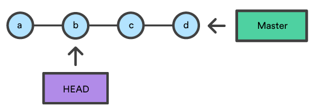

Source Version Control
Why?
- 1 lone wolf does not need version control (well may be for rollbacks & back-up)
- Remote teams can use emails and attachments (for patches), can they?
- How to coordinate a dev team working on the same codebase?
- How to manage massively distributed development projects like open source?
Chronology of Version Control Systems

Centralised Version control

- You commit
- They update
Decentralised Version control

- You commit
- You push
- They pull
- They update
SVN
- Software versioning and revision control system distributed as open source under the Apache License.
- Has only one single place for the full version history of the software.
git SCM
gitis decentralised version control system- Every developer's working copy of the code is also a repository that can contain the full history of all changes.
githas been designed with performance, security and flexibility in mind.
The main component of git repository

Open Source Development Process
https://youtu.be/Tyd0FO0tko8git checkout
- moves HEAD ref point to specified commit
git checkout b

- A file level checkout will change the file's contents to those of the specific commit.
git checkout HEAD~2 foo.py

git reset

git checkout hotfixgit reset HEAD~2
- file-path invocation updates the staged snapshot to match the version from the specified commit.

git revert

git checkout hotfixgit revert HEAD~2
git merge
git checkout featuregit merge master


git rebase
git checkout featuregit rebase master

Interactive rebase

git checkout featuregit rebase -i master
```bash
pick 33d5b7a Message for commit #1
pick 9480b3d Message for commit #2
pick 5c67e61 Message for commit #3
```
```bash
pick 33d5b7a Message for commit #1
fixup 9480b3d Message for commit #2
pick 5c67e61 Message for commit #3
```
git cherry-pick
- initial branch state
```bash
a - b - c - d Master
\
e - f - g Feature
```
- When executed the following command:
git checkout mastergit cherry-pick f
```bash
a - b - c - d - f Master
\
e - f - g Feature
```
Code Review tool
- Gerrit
- Open source
- Manages workflow
gitcompatible- Quality check.
- Automate test after build
- Typically code reviewed after build passes
Test Driven Development
- Why?
- Avoid regressions
- Easier maintenance and error detection
- Release early and often
- Process
- Add test
- Run and make new tests fail
- Write code
- Run all tests
- Refactor as needed
Dev(lopers) And Op(eration)s
DevOps Life cycle

{kind=link}
CI/CD tool
- Jenkins
- Setup continuous delivery and continuous integration pipeline
- Uses Pipeline as Code (IaC)
- Build, test and deploy code
- Uses groovy syntax for writing pipeline code (although YML plugin is available)
How does CD help SCRUM teams?